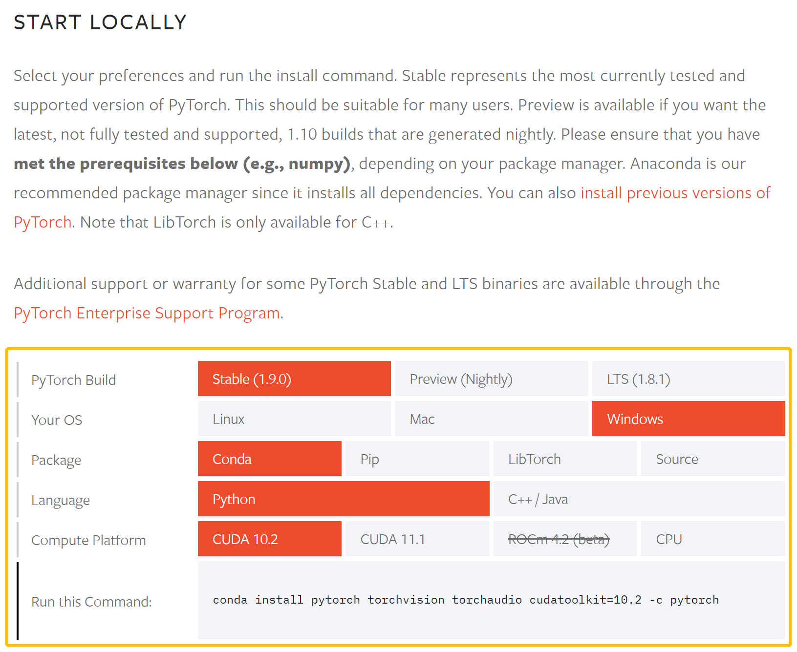
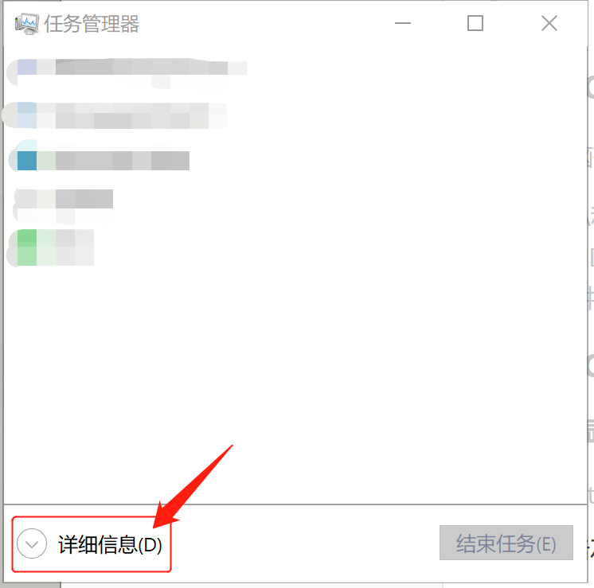
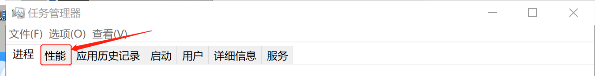
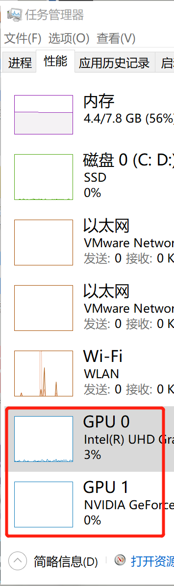
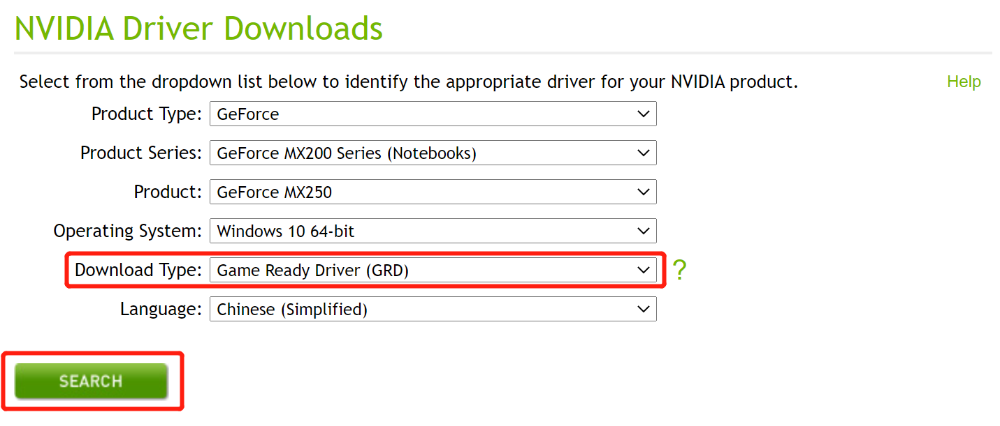
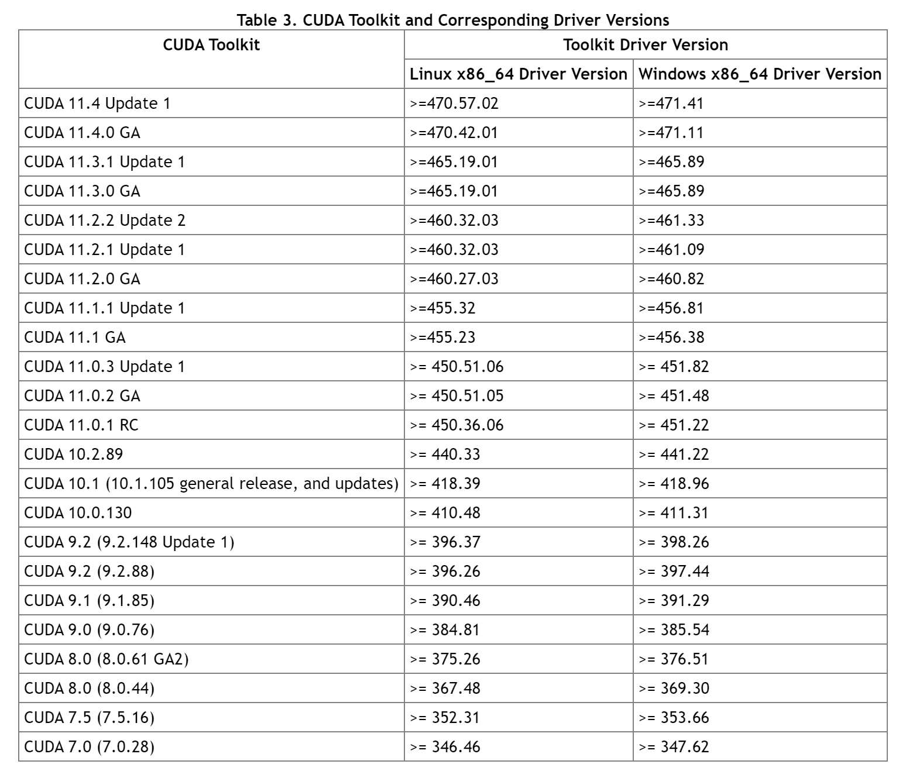

安装PyTorch
*说明：本文中网站部分为境外网站，可能不稳定，如遇网站打不开的情况可等待一段时间再刷新。
1 安装最新版 PyTorch
关于安装 PyTorch，官网上有方便且详细的安装说明。
在 START LOCALLY 部分选择合适的 PyTorch 版本、系统类型、安装包、编程语言、计算平台，并运行 Run this Command 中的命令即可完成安装。

上图中 Compute Platform 部分代表运算平台，可自行选择是否使用 CUDA （或 ROCm )。如使用 CUDA 则需先下载好相应版本的 CUDA 再安装 PyTorch 。
下面详细说明 CUDA 的选择和下载。
1.1 CUDA 是什么
CUDA（Compute Unified Device Architecture），是显卡厂商 NVIDIA 推出的运算平台，主要用于支持 GPU 加速计算。
*一般而言，GPU 会比 CPU 有 5 ~ 10 倍的加速，因此如果有合适的显卡，安装 CUDA 比较好。
*如果电脑不支持 CUDA，只是无法使用显卡加速，并无其他影响。
1.2 使用 CUDA 的条件
需要电脑有 NVIDIA 的显卡
*CUDA 和后文中的 ROCm 都是显卡的驱动程序，区别在于 CUDA 是 NVIDIA 的，ROCm 是 AMD 的，选择哪一个驱动程序取决于电脑硬件。
1.3 查看 CUDA 版本并安装
1.3.1 查看显卡型号
-
按 Alt + Ctrl + Del 打开任务管理器
-
点击左下角 “详细信息”

-
点击上方 “性能” 栏

-
找到 GPU（如果是双显卡，则还会有 GPU1），记住 GPU 型号

1.3.2 查看对应 CUDA 版本并安装
-
打开 NVIDIA 网站
-
填写显卡型号等信息，点击 SEARCH 查询
*Download Type 一般选择 Game Ready Driver 即可
*Studio 版用于专业视频处理软件加速
-
记住 NVIDIA 驱动版本并安装相应驱动
-
打开此网站，找到 Table 3.CUDA Toolkit and Corresponding Driver Versions，即为需要安装的 CUDA 版本

-
打开 CUDA 下载网站，下载对应版本的 CUDA
*2 安装 1.9.0 版 PyTorch
2.1 Windows 系统
可以自行选择通过 pip 或 Anaconda 来安装。
*以下 Windows 发行版本支持 PyTorch：
-
Windows 7 及以上版本，推荐使用 Windows 10及以上版本
-
Windows Sever 2008 r2 或以上版本
*此安装说明通常适用于所有受支持的 Windows 发行版
*文中所显示的具体示例在 Windows 10 上运行
*要求 Python 3.x 版本
*为了充分利用 PyTorch 的 CUDA 支持，建议 Windows 系统使用 NVIDIA GPU，但不是必需的
2.1.1 通过 pip 安装
*常见错误：MemoryError
错误原因：由于 pip 的缓存机制尝试将待安装库的整个文件缓存到内存，而在限制缓存大小的环境中如果安装包较大就会出现 MemoryError 的这个错误。
解决方法：将 pip3 install torch 命令改为 pip3 --no-cache-dir install torch ，以此禁用缓存。
2.1.1.1 使用 CUDA
根据需要的 CUDA 版本，在 cmd 中运行以下两种命令之一。一般来讲，最新的 CUDA 版本更好。
CUDA 11.1
pip3 install torch==1.9.0+cu111 torchvision==0.10.0+cu111 torchaudio===0.9.0 -f https://download.pytorch.org/whl/torch_stable.html
CUDA 10.2
pip3 install torch==1.9.0+cu102 torchvision==0.10.0+cu102 torchaudio===0.9.0 -f https://download.pytorch.org/whl/torch_stable.html
2.1.1.2 不使用 CUDA
电脑不支持 CUDA 或不需要 CUDA 可选择此方法。在 cmd 中运行以下代码。
pip3 install torch torchvision torchaudio
2.1.2 通过 Anaconda 安装
要使用 Anaconda 安装 PyTorch，需要通过 Start | Anaconda3 | Anaconda prompt 打开一个 Anaconda 提示符
2.1.2.1 使用 CUDA
根据需要的 CUDA 版本，运行以下两种命令之一。一般来讲，最新的 CUDA 版本更好。
CUDA 11.1
conda install pytorch torchvision torchaudio cudatoolkit=11.1 -c pytorch -c conda-forge
*注意： cudatoolkit 11.1 需要 'conda-forge' 通道
CUDA 10.2
conda install pytorch torchvision torchaudio cudatoolkit=10.2 -c pytorch
2.1.2.2 不使用 CUDA
电脑不支持 CUDA 或不需要 CUDA 可选择此方法。运行以下命令。
conda install pytorch torchvision torchaudio cpuonly -c pytorch
2.2 Mac 系统
可以自行选择通过 pip 或 Anaconda 安装
*macOS 10.10 (Yosemite) 或更高版本支持 PyTorch
*要求 Python 3.5 及以上版本
*为充分利用 PyTorch 的 CUDA 支持，建议 Mac 使用 NVIDIA 的 GPU，但不是必需的
*目前，macOS 上的 CUDA 支持只能通过从源代码构建 PyTorch 来获得
2.2.1 通过 pip 安装
使用以下命令
pip3 install torch torchvision
*常见错误：MemoryError
错误原因：由于 pip 的缓存机制尝试将待安装库的整个文件缓存到内存，而在限制缓存大小的环境中如果安装包较大就会出现 MemoryError 的这个错误。
解决方法：将 pip3 install torch 命令改为 pip3 --no-cache-dir install torch ，以此禁用缓存。
2.2.2 通过 Anaconda 安装
使用以下命令
conda install pytorch torchvision -c pytorch
2.3 Linux 系统
可以自行选择通过 pip 或 Anaconda 安装
*PyTorch 在使用 glibc >= v2.17 的 Linux 发行版上受支持，包括:
-
Arch Linux, 最低版本 2012-07-15
-
CentOS, 最低版本 7.3-1611
-
Debian, 最低版本 8.0
-
Fedora, 最低版本 24
-
Mint, 最低版本 14
-
OpenSUSE, 最低版本 42.1
-
PCLinuxOS, 最低版本 2014.7
-
Slackware, 最低版本 14.2
-
Ubuntu, 最低版本 13.04
*此说明通常适用于所有受支持的 Linux 发行版；不同的是，你的发行版可能支持 yum 而不是 apt；文中的具体示例是在 Ubuntu 18.04 机器上运行的
*要求 Python 3.6 及以上
*为了充分利用 PyTorch 的 CUDA 支持，建议 Linux 系统有 NVIDIA GPU，但不是必需的
2.3.1 通过 pip 安装
*常见错误：MemoryError
错误原因：由于 pip 的缓存机制尝试将待安装库的整个文件缓存到内存，而在限制缓存大小的环境中如果安装包较大就会出现 MemoryError 的这个错误。
解决方法：将 pip3 install torch 命令改为 pip3 --no-cache-dir install torch ，以此禁用缓存。
2.3.1.1 使用 CUDA
根据需要的 CUDA 版本，运行以下两种命令之一。一般来讲，最新的 CUDA 版本更好。
CUDA 11.1
pip3 install torch==1.9.0+cu111 torchvision==0.10.0+cu111 torchaudio==0.9.0 -f https://download.pytorch.org/whl/torch_stable.html
CUDA 10.2
pip3 install torch torchvision torchaudio
2.3.1.2 使用 ROCm 4.2 (beta)
电脑支持 ROCm 可选择此方法。运行以下命令。
pip3 install torch -f https://download.pytorch.org/whl/rocm4.2/torch_stable.html
pip3 install ninja && pip3 install 'git+https://github.com/pytorch/vision.git@v0.10.0'
2.3.1.3 不使用 CUDA 或 ROCm
电脑不支持 CUDA (ROCm) 或不需要 CUDA (ROCm) 可选择此方法。运行以下命令。
pip3 install torch==1.9.0+cpu torchvision==0.10.0+cpu torchaudio==0.9.0 -f https://download.pytorch.org/whl/torch_stable.html
2.3.2 通过 Anaconda 安装
2.3.2.1 使用 CUDA
根据需要的 CUDA 版本，运行以下两种命令之一。一般来讲，最新的 CUDA 版本更好。
CUDA 11.1
注意：cudatoolkit 11.1 需要 'nvidia' 通道
conda install pytorch torchvision torchaudio cudatoolkit=11.1 -c pytorch -c nvidia
CUDA 10.2
conda install pytorch torchvision torchaudio cudatoolkit=10.2 -c pytorch
2.3.2.2 不使用 CUDA
电脑不支持 CUDA 或不需要 CUDA 可选择此方法。运行以下命令。
conda install pytorch torchvision torchaudio cpuonly -c pytorch
3 验证是否安装成功
3.1 PyTorch
为了确保 PyTorch 已正确安装，我们可以通过在 Python 中运行样例 PyTorch 代码来验证安装。这里我们将构造一个随机初始化的张量。
import torch
x = torch.rand(5, 3)
print(x)
如安装成功，则输出类似：
tensor([[0.2909, 0.1746, 0.5248],
[0.6025, 0.7822, 0.0810],
[0.4011, 0.6752, 0.7671],
[0.1711, 0.3247, 0.7620],
[0.1548, 0.5274, 0.9023]])
3.２ 检查 GPU 驱动程序和 CUDA 是否启用并可通过 PyTorch 访问
运行以下代码：
import torch
torch.cuda.is_available()
将返回是否启用 CUDA 驱动程序